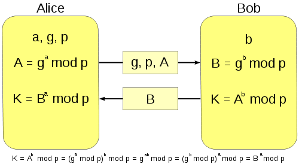

Após ler a explicação do Wikipedia e alguns exemplos de implementações, ainda com dificuldade para entender o método, utilizei a imagem abaixo como base para a construção do estabelecimento de chave secreta baseado no método Diffie-Hellman:
Vendo meu servidor como Alice, nele gero a, g e p, respectivamente salvos nas variáveis base, private_key e shared_key. Envio para o cliente por meio de um json, os valores de base, shared_key e do A, salvo em public_secret e calculado com método generate_public_secret do arquivo diffieHellman.py.
Após receber e processar os valores do recebidos do servidor via json o cliente calcula a public_secret com o mesmo método e o envia para o servidor. Com isso, ambos conseguem calcular o valor de K, referenciado como shared_secret.
Usando a biblioteca Crypto.Cipher, é gerado um cipher do modo MODE_ECB para criptogafar (no cliente) e descriptografar (no servidor) a mensagem, baseada nessa chave. Na verdade, na conversão dessa chave para 8 bytes com a função to_bytes(). Para o uso dessa biblioteca, também precisei usar as funções pad e unpad para adicionar e remover padding do bloco de dados a ser transmitido.
O cliente é encerrado ao receber uma mensagem "exit" e o servidor ao receber uma mensagem vazia.
O gerador de primos, também contido no arquivo diffieHellman.py, foi criado no repositório cedi/DiffieHellman, que também foi usado como base para implementação do trabalho, junto ao artigo Diffie-Hellman Key Exchange explained (Python).